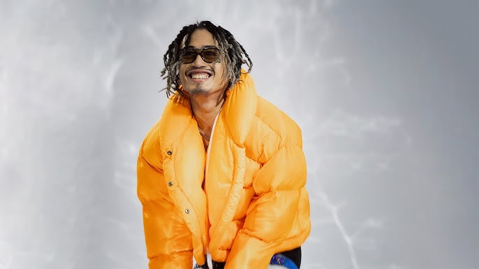
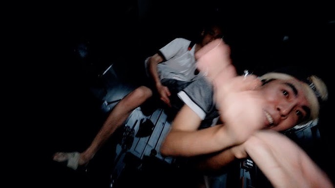

Lăng LD
Lăng LD, a Vietnamese rapper with a distinctive style and charisma, rose to fame through his hit "Ý Em Sao" in 2018,
which showcased his heartfelt lyricism and melodic rap style. Originally from the Mekong Delta, he is part of the prominent rap group OTD
(Original Tây Đô), which represents the western region of Vietnam. Lăng LD blends influences from both underground and mainstream music,
often incorporating personal stories and cultural nuances into his work.
Despite having no formal musical training, his natural talent and determination have earned him recognition in Vietnam's rap scene.
He competed in the popular show Rap Việt, making it to the top 8 contestants and gaining widespread acclaim for his energetic performances and
unique style. Lăng LD's music often reflects his life experiences, from humble beginnings to his artistic journey, resonating deeply with
audiences
Additionally, his mixed French-Vietnamese heritage adds to his unique identity in the music industry. Lăng LD continues to captivate fans
with his authenticity, staying true to his roots while making significant contributions to Vietnamese rap
Hustlang Robber

Hustlang Robber, also known as "The Captain" of Hustlang, is a prominent Vietnamese rapper known for his deep connection to the hip-hop
community and his leadership in the rap crew Hustlang. Starting his career with the group 43 Dawgz in Da Nang, Robber honed his skills
and found inspiration in his early experiences with rap and hip-hop culture. Later, he formed Midside Hustler, a rap collective in
central Vietnam, before expanding his career in Ho Chi Minh City by joining various groups like VND and DCOD, where he further
developed his unique style.
In 2020, Hustlang was established as a collective embodying Robber's vision of a supportive, dynamic hip-hop community. Drawing
inspiration from the manga One Piece, he considers himself a real-life "Luffy," leading Hustlang to become a thriving group of nearly 50
artists across different hip-hop disciplines. Robber's music, marked by emotional depth and technical skill, includes tracks like Con Tim
Tao Đau Quá Man and Luffy 19, which showcase his talent and resonate with listeners.
VCC CCMK

VCC CCMK, a Vietnamese rapper and R&B artist, is recognized for his unique musical style blending rap with diverse, vibrant elements.
As the leader of the Vibe Catchers Collective (VCC), CCMK has gained popularity for hit tracks such as Nơi Tình Yêu Bốc Đầu
(Where Love Ignites), Babe, I’m Out, and Chân Tình Parody. His works often showcase a mix of playful energy and emotional depth,
resonating with a wide audience in the Vietnamese music scene.
Known for his creativity, CCMK frequently collaborates with other artists in the underground music community and explores various
subgenres, contributing significantly to modern Vietnamese rap and R&B.